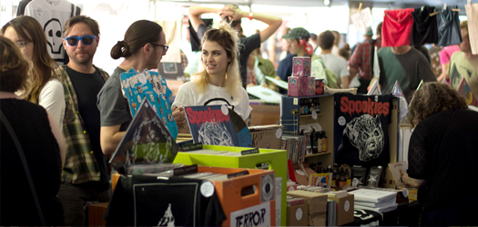
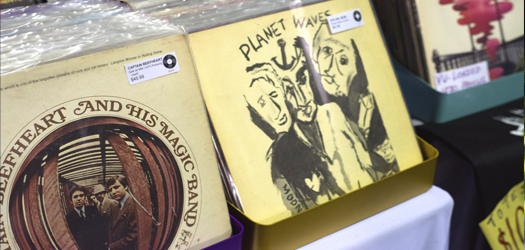
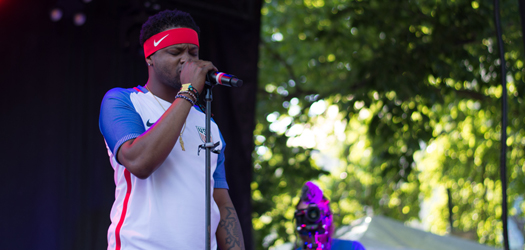
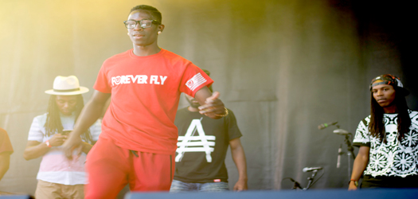
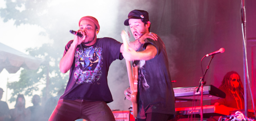

Pitchfork Saturday
Saturday was a beautiful afternoon for music. There was an excitement in the air for Anderson Paak, BJ the Chicago Kid, Brian Wilson, and Sufjan Stevens. There were people of all ages eating delicious food, drinking $8.00 beers, and checking out the Chirp Radio record fair.
The Chirp Radio record fair is probably my favorite aspect of Pitchfork Music Festival because it allows people who may not go out of there way to record stores to look and discover new music they are not exposed to. Not only do they offer vinyl records but they offer other music formats as well.


After the Record Fair the Pitchfork journey continued toward the Blue Stage where they were setting up for BJ the Chicago Kid. The crowd was slowly getting bigger as we waited near the pit. As we waited the DJ began to play “Can’t Tell Me Nothing” by Kanye West and as the song continued to play the guitar player began playing along. This was very cool as a musician to hear him play along by ear was amazing. To me the waiting are the times you observe the most positive energy and love. People are talking about some of the bands they’ve seen or who they are excited to see perform.
BJ the Chicago Kid started talking on the microphone and ran out like a wrecking ball. He was everything you expected him to be. He represents the Southside of Chicago and reminded us. He is what many musicians in Chicago aspire to be. He went from humble beginnings to performing at Pitchfork Music Festival. He performed his hit song “Church,” and overall he put on an amazing performance.


I eventually made my way back to the Blue Stage where Jlin, an electronic musician from Gary, Indiana was preparing for her DJ set. She released her Dark Energy EP in April 2015 to critical acclaim. She performed an amazing set of footwork jams. Footwork is a style of dance music with hints of traditional house music, but differentiates itself with a frenzied pace. During her performance there were footwork dancers on the stage dancing. Dancers are a rare breed in this age where no one really takes time to master one craft. These dancers had an amazing balance of technicality and freestyle moves.
It had been an amazing day so far, and I was really looking forward to Anderson Paak. You could feel the anticipation of the crowd. The music began and Anderson ran out onto the stage. The love Anderson had for the crowd and the crowd had for Anderson was mutual. Anderson Paak is one of the biggest up and coming stars in Hip Hop. The thing about Anderson Paak is that he’s not your traditional emcee. He’s sort of a hybrid singer and emcee. His music is so soulful, yet hip hop at the same time. He thanked the crowd for supporting his albums NX Worries, Malibu, and Venice.

Ten minutes into this he performed “Suede” off of the NX Worries album. I, and the crowd lost their shit. That is definitely a favorite song off of that album. After Anderson Paak’s set I walked towards Sufjan Stevens. What looked like an amazing show for others could not top Anderson Paak. This Saturday afternoon was one for the books. [daniel martinez]
Read more: 1 | 2 | 3 |
Check out more Pitchfork photos here!
Check out our Pitchfork mixtape over at Soundcloud.
photo credits: daniel martinez